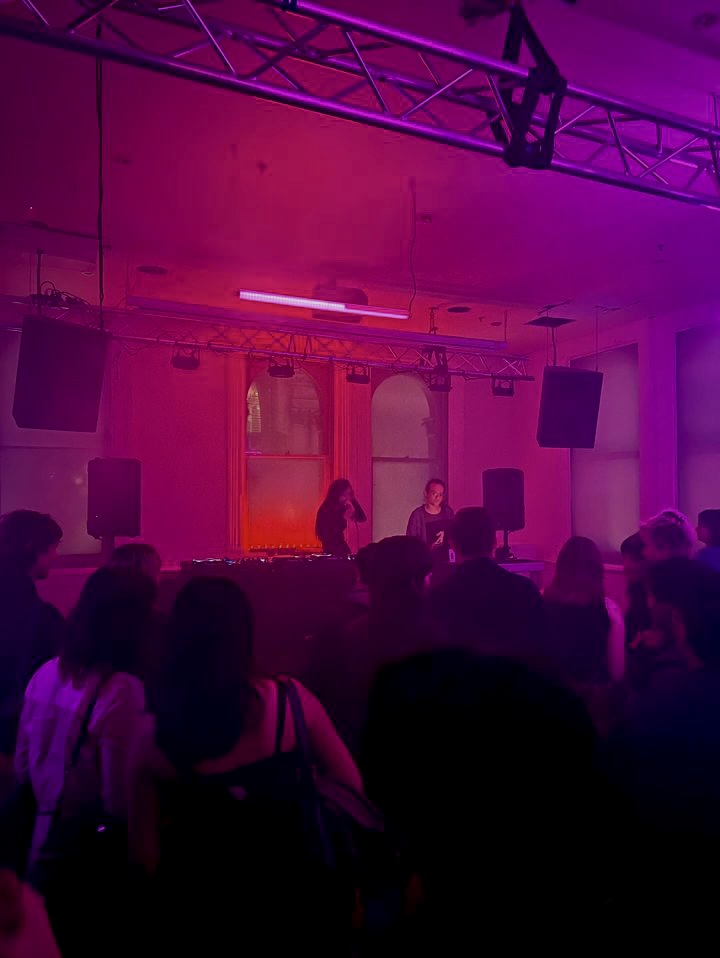
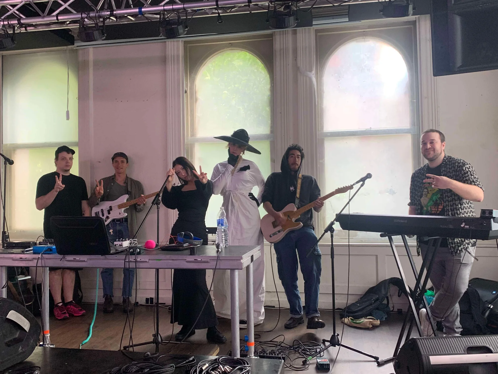
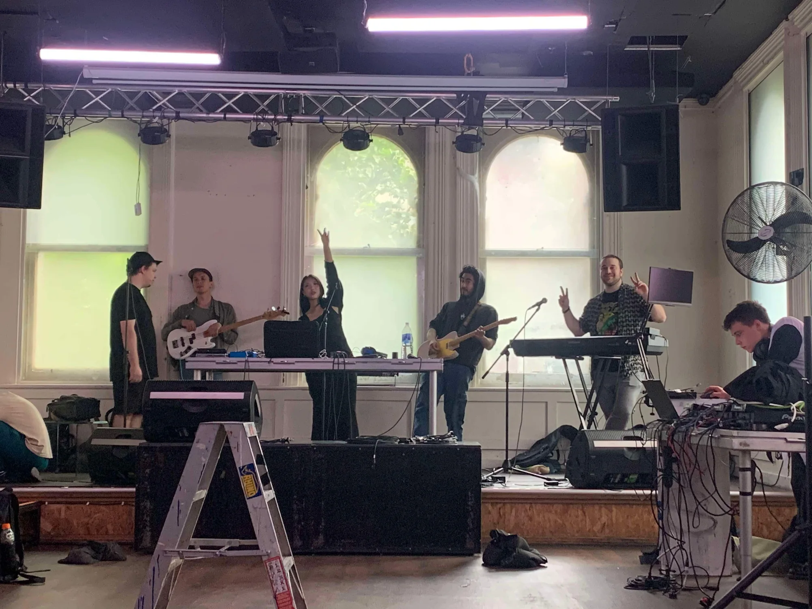

Live Performance
실시간으로 구성되는 사운드와 무빙이미지.

Median과 Median 2를 통해 전개된 라이브 작업으로, 오리지널 사운드와 실시간 무빙이미지를 하나의 구성 안에 놓습니다.
실시간 구성
Park의 라이브 퍼포먼스는 사운드, 이미지와 공연의 시간 사이의 관계를 탐구합니다. 오리지널 사운드와 실시간 무빙이미지는 공연의 분위기와 현장성에 직접 연결되어 구성됩니다. Median과 Median 2는 이 라이브 작업 안에서 발표한 서로 다른 공연입니다.
Median 2 / 2024
2024년 6월과 10월 · Miscellania, 멜버른. Median 2는 오리지널 사운드와 실시간 무빙이미지를 공연의 시간, 분위기와 현장성에 직접 연결하며 Park의 실시간 구성 방식을 발전시킨 작업입니다.
Median / 2023
2023년 11월 · Miscellania, 멜버른. Median은 오리지널 사운드와 실시간 무빙이미지를 공연의 시간과 분위기에 직접 연결하며 Park의 초기 라이브 작업 방식을 구축했습니다. 사운드와 이미지를 라이브 이벤트의 시간 안에서 구성하는 재료로 다룬 초기 작업입니다.

